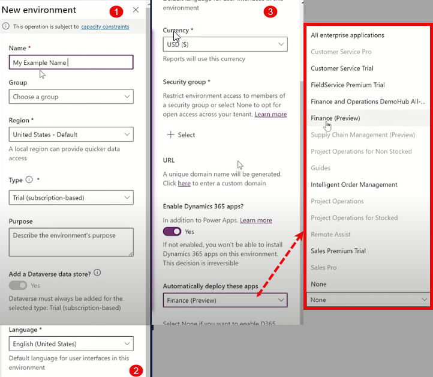

Umgebungen hinzufügen
Umgebungen sind wie Container, die es Administratoren ermöglichen, Daten, Apps, Flows und Verbindungen zu verwalten und Berechtigungen für die
Nutzung dieser Ressourcen zu vergeben. Sie können mehreren Umgebungen in einem Mandanten hinzufügen.
Jede Umgebung wird unter einem Microsoft Entra ID-Mandanten erstellt, sodass nur Benutzer dieses Mandanten auf die Umgebung zugreifen können.
Eine Umgebung ist auch an einen Standort geografisch gebunden (z. B. USA), und Apps, die dort erstellt werden, werden in Rechenzentren in diesem
Gebiet gespeichert.
Umgebungen können keine oder eine Microsoft Dataverse-Datenbank enthalten, die Speicherplatz für Apps und Chatbots bietet. Ob eine Datenbank erstellt
werden kann, hängt von der Lizenz(erworben für Power Apps) und ihrer Berechtigungen in dieser Umgebung ab .
Wenn Sie eine App in einer Umgebung erstellen, kann sie nur mit Datenquellen innerhalb derselben Umgebung verbunden werden.
Zum Beispiel kann eine App in der Testumgebung nur auf die Testdatenbank zugreifen, nicht auf die Datenbank der Entwicklungsumgebung.
Rollen innerhalb einer Umgebung
Es gibt zwei Hauptrollen in Umgebungen:
- Umgebungsadministrator: Diese Rolle hat volle Verwaltungsrechte in einer Umgebung.
- Sie kann Benutzerrollen zuweisen oder entziehen( z.B. Umgebungsadministrators oder Umgebungserstellers ),
- eine Dataverse-Datenbank für die Ugebung bereitstellen,
- alle Ressourcen in der Umgebung verwalten und
- Richtlinien zum Schutz vor Datenverlust festlegen.
- Umgebungsersteller: Diese Rolle kann Ressourcen in einer Umgebung erstellen, wie Apps, Verbindungen, Gateways und Power Automate Flows.
Eine neue Umgebung erstellen
Im Power Platform Admin Center (PPAC) gibt es das Konzept von Templates. Templates dienen nur der Effizienz und sind optional. Ohne ein Template
könntest du Dataverse bereitstellen, Dynamics aktivieren und die Umgebung Schritt für Schritt von Grund auf aufbauen, ohne vorinstallierte Apps.
Das bedeutet, du könntest beispielsweise Finance and Operations (F&O), Sales oder Customer Service manuell installieren und konfigurieren. Allerdings dauert dieser Prozess länger.
Der Zweck eines Templates ist es, dir Zeit zu sparen: Microsoft hat viele der häufig genutzten Funktionen und Apps so vorkonfiguriert, dass sie gemeinsam
verwendet werden können. Mit einem Template kannst du diese vorgefertigte Umgebung schnell und einfach einrichten.

F&O-Lizenzen und Anwendungen
Microsoft verkauft keine einheitliche Finance and Operations (F&O)-Lizenz mehr. Stattdessen wurden die Lizenzen in spezifische Bereiche aufgeteilt,
wie Finance, Supply Chain, Commerce und weitere.
Trotz dieser unterschiedlichen Lizenzmodelle wird in allen Fällen dieselbe F&O-Anwendung installiert. Die Trennung der Lizenzen dient dazu,
Kunden flexibler auf ihre individuellen Bedürfnisse einzugehen.
Templates für spezifische Lizenzen und Anwendungen- Finance-Kunden:
- Wenn du eine Finance-Lizenz hast, steht dir ein Finance-Template zur Verfügung. Dieses enthält Dataverse, auf dem die F&O-Anwendung installiert wird.
- Zusätzlich könnten Funktionen wie Copilot für Finance oder Financial Reporting integriert sein, mit denen du z. B. Einkommensübersichten oder Bilanzen
- erstellen kannst. Dieses Template ist speziell auf die Bedürfnisse von Finance-Kunden zugeschnitten.

- Supply Chain Management (SCM)-Kunden:
- Für SCM-Kunden gibt es das Supply Chain Management-Template. Auch hier sind Dataverse und die F&O-Anwendung enthalten. Darüber hinaus könnten
- Funktionen wie der Copilot für SCM oder das Inventory Visibility Add-In vorinstalliert sein, um spezifische Anforderungen im Bereich der Lieferkettenverwaltung zu unterstützen.

Flexibilität bei der Nutzung:
Nach der Erstellung der Umgebung kann ein Finance-Kunde beispielsweise Funktionen wie den Copilot für SCM installieren – und umgekehrt.
Die Templates dienen lediglich der Effizienz und schnellen Einrichtung. Es gibt keine Einschränkungen, die verhindern, dass verschiedene Anwendungen
über Lizenzen hinweg kombiniert werden.